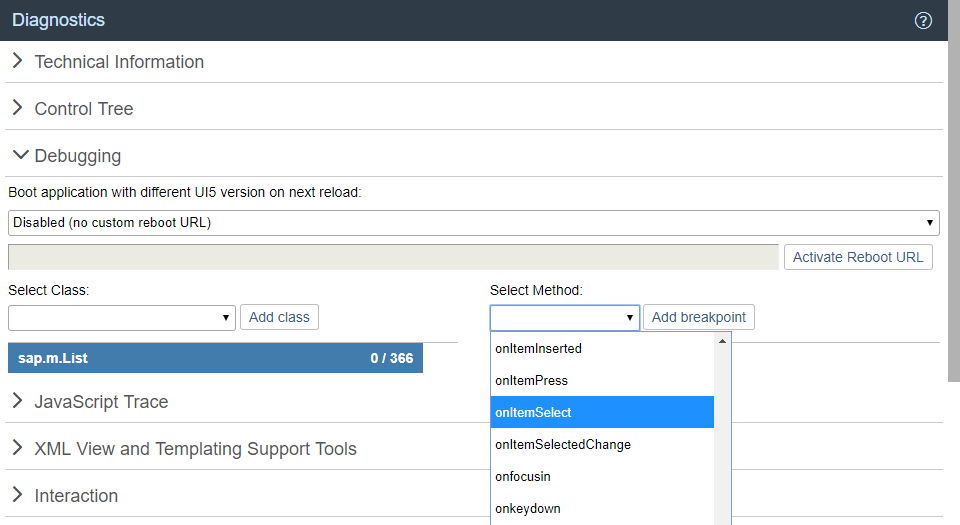

Debugging
When developing apps, searching for bugs is an inevitable part of the process. To analyze an issue, you can use the developer tools of your browser and built-in OpenUI5 tools. In this section, we give an overview of the OpenUI5 tools you can use when debugging. To learn more about the developer tools of your browser, check the documentation of the browser.
Loading Debug Sources
For performance reasons, the OpenUI5 files are loaded in a minified version, this means that all possible variable names are shortened and comments are removed. This makes debugging harder because the code is less readable.
For debugging, you first have to load the Debug Sources. You have the following options:
URL parameter sap-ui-debug=true
Select the Use Debug Sources in the Technical Information Dialog
For more information, see Technical Information Dialog.
Add the module names to the sap-ui-debug URL parameter, separated by a comma. For example, sap-ui-debug=sap/ui/core/Core.js,sap/m/InputType.js loads the debug sources for the sap.ui.core.Core and sap.m.InputType libraries.
Choose the Select specific modules link in the Technical Information Dialog.
For more information, see Technical Information Dialog.
After reloading the page, in the Network tab of the browser’s developer tools you can see that the controls and framework assets are now loaded individually and have a -dbg suffix. These are the source code files that include comments, the uncompressed code of the app, and the OpenUI5 artifacts.
Choose Ctrl + O (Windows) or Command + O (macOS) and type the name of an OpenUI5 artifact to view its source code in debug mode.
Switching the OpenUI5 Version
Open the Diagnostics window with the shortcut CTRL + SHIFT + ALT + S.
At the top of the Debugging view, you can configure a custom URL from which the application should load OpenUI5 the next time that the app opens.
Either select a known OpenUI5 installation from the dropdown box, or enter a different URL that points to the sap-ui-core.js file within a complete OpenUI5 runtime.
Once you have entered the URL, press Activate Reboot URL. When you then reload the application page, the application loads OpenUI5 from the alternative URL. This only happens for the next single reboot; after that, OpenUI5 is loaded again from the standard URL referenced within the app.
This feature can be used to test an application against a newer or older version of OpenUI5 as part of compatibility testing, or for verifying a bug fix or regression.

Setting Breakpoints
Breakpoints are helpful when you debug the event handling of an OpenUI5 object. You can either set breakpoints in the developer tools of your browser, or use the Diagnostics window.
For more information, see Diagnostics.
Breakpoints on the Class Level
In the Debugging section of the Diagnostics window, you can set breakpoints on the class level.
Open the Debugging view of the Diagnostics window.
Select a class from the dropdown list or enter the name of the class and choose Add Class.
The selected class is now visible below the dropdown list.
The number next to the method name shows the number of methods that belong to the class and the number of methods for which a breakpoint is set.
Select the class. On the right side of the view, you can now select methods of the selected class from a dropdown list.
From the dropdown list, select the method for which you want to set the breakpoint and choose Add breakpoint.
The selected methods are listed below the dropdown list.
Open the developer tools of your browser. Whenever the selected methods are called for any instance of the selected control, the code execution is paused in the debugger.
In the call stack you find the method for which you set a breakpoint.

To remove a breakpoint, select the red x.
Breakpoints on the Object Level
In the Control Tree of the Diagnostics window, you can set breakpoints on the object level.
Open the Control Tree view of the Diagnostics window.
Select a control in the tree.
You can also press and hold Ctrl + Shift + Alt and select a control in your app to select it in the tree.
Select the Breakpoints tab on the right.
From the dropdown list, select the method for which you want to set the breakpoint and choose Add breakpoint.
The selected methods are listed below the dropdown list.
Open the developer tools of your browser. Whenever the selected methods are called for any instance on the control, the code execution is paused in the debugger.

To remove a breakpoint, select the red x.